00:02那么，监督学习算法学习的是预测从输入到输出，或者说从 X 到 Y 的映射。
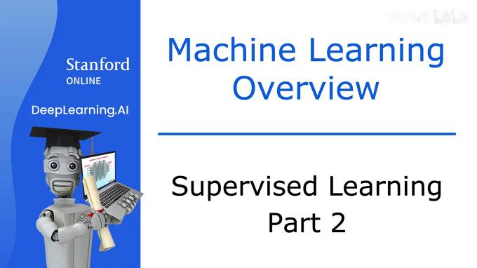
00:10在上一个视频中，你看到回归算法（监督学习算法的一种）学习从无限多个可能的数值中预测出数值。
00:21还有第二种主要类型的监督学习算法，称为分类算法。
00:28让我们来看看这是什么意思。
00:31以乳腺癌检测作为分类问题的一个例子。
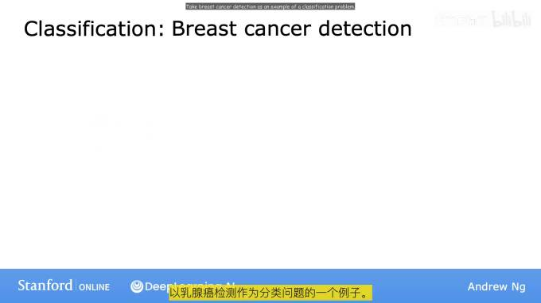
00:37假设你正在构建一个机器学习系统，以便医生拥有一个诊断工具来检测乳腺癌。
00:44这很重要，因为早期检测有可能挽救患者的生命。
00:49利用患者的医疗记录，你的机器学习系统试图判断一个肿瘤（也就是一个肿块）。
00:56是恶性的，意味着癌变或危险，还是说那个肿瘤（那个肿块）是良性的，意味着它只是一个肿块，没有癌变，不那么危险。
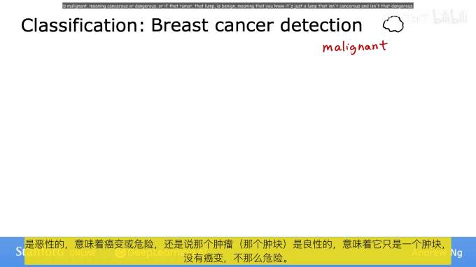
01:10我的一些朋友实际上一直在研究这个具体的问题。
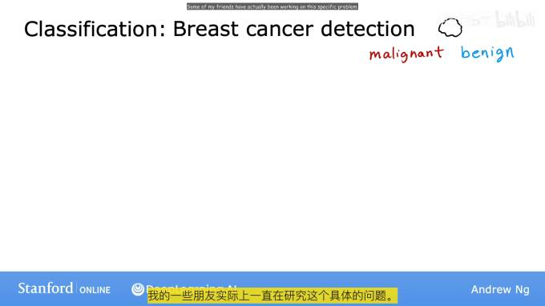
01:14那么，也许你的数据集包含各种大小的肿瘤，这些肿瘤被标记为良性（在这个例子中我将用零表示）或恶性（在这个例子中我将用一表示）。
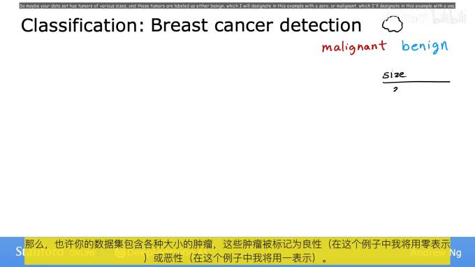
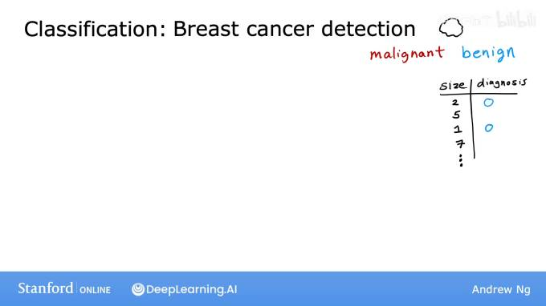
01:32然后你可以像这样将数据绘制在图表上，其中横轴代表肿瘤的大小，纵轴只取两个值，零或一，取决于肿瘤是良性（零）还是恶性（一），这与回归不同的一个原因是，我们只尝试预测少数几种可能的输出或类别。
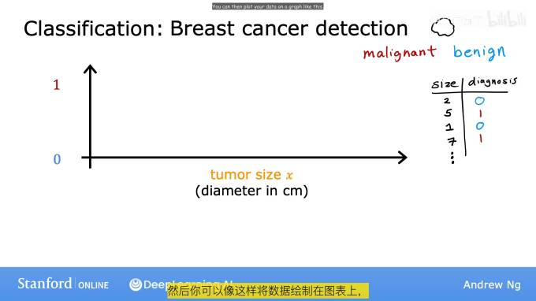
02:03在这个例子中，有两种可能的输出：零或一，良性或恶性。
02:10这与回归不同，回归试图从无限多个可能的数值中预测出任何数值。
02:21因此，只有两种可能的输出这一事实使得这成为分类问题。
02:28因为这个例子中只有两种可能的输出，也就是两种可能的类别，你也可以像这样将数据集绘制在一条线上，这里我将使用两种不同的符号来表示类别，用圆形或字母 O 表示良性样本，用叉号表示恶性样本。
02:54如果一位新患者前来就诊，他们有一个这么大的肿块，那么问题是，你的系统会将这个肿瘤分类为良性还是恶性？
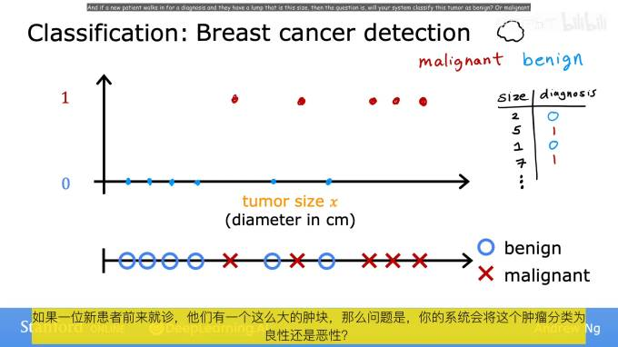
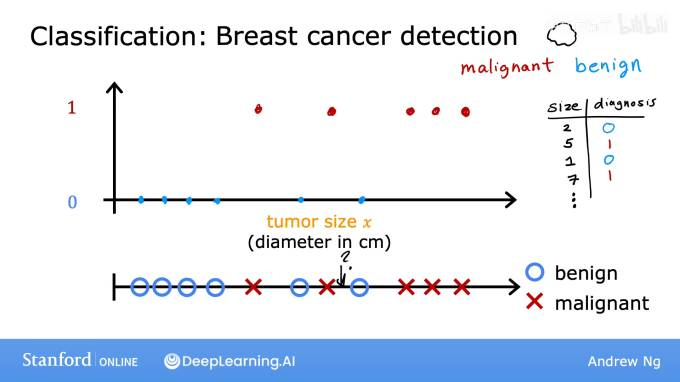
03:09事实证明，在分类问题中，你也可以有超过两种可能的输出类别。
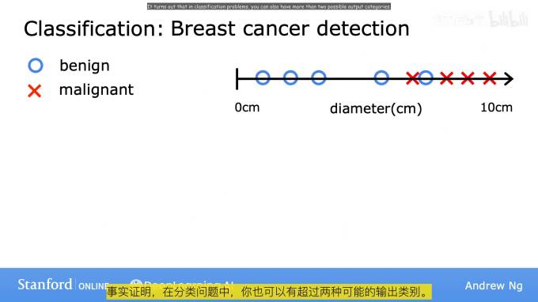
03:16如果结果是恶性，你的学习算法可能会输出多种类型的癌症诊断结果。
03:24那么，让我们称两种不同类型的癌症为一型癌症和二型癌症。
03:29在这种情况下，算法可以预测三种可能的输出类别。
03:36顺便提一下，在分类问题中，输出类别这个术语经常被互换使用。
03:44所以，当我提到输出时说到类别，意思是一样的。
03:51总结一下，分类算法预测的是类别。
03:57类别不一定是数字，也可以是非数字的。
04:01例如，它可以预测一张图片是猫还是狗，也可以预测一个肿瘤是良性还是恶性。
04:14类别也可以是数字，比如零或一，或者零、一和二。
04:21但是，当你解读数字时，分类与回归的不同之处在于，分类预测的是一个小的、有限的、限定范围内的可能输出类别，例如零、一和二，而不是介于其间的所有可能数值，比如零点五或一点七。
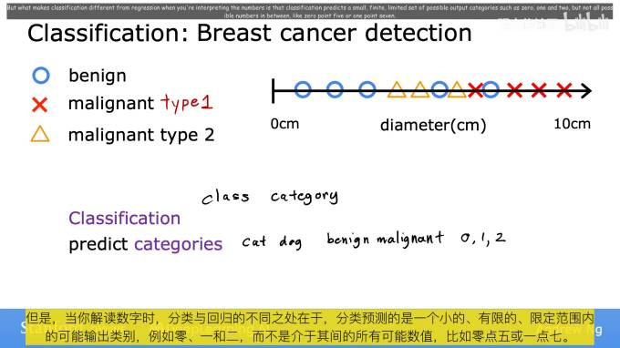
04:42在我们一直在看的监督学习例子中，我们只有一个输入值，即肿瘤的大小。
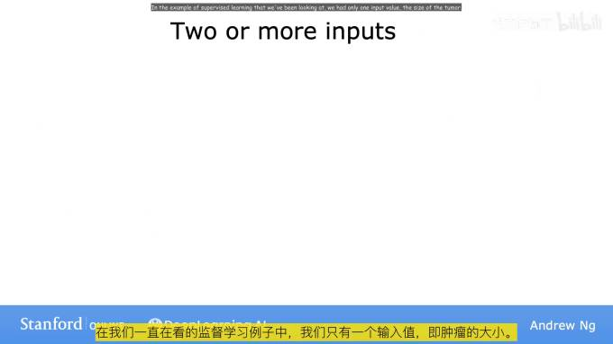
04:53但你也可以使用多个输入值来预测输出。
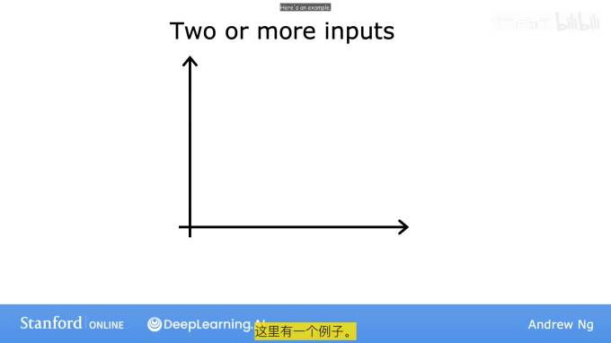
05:00除了了解肿瘤大小之外，假设你还知道每位患者的年龄（以岁为单位），你的新数据集现在有两个输入：年龄和肿瘤大小。
05:13绘制这个新的数据集时，我们将用圆形来显示肿瘤为良性的患者，用叉号来显示肿瘤为恶性的患者。
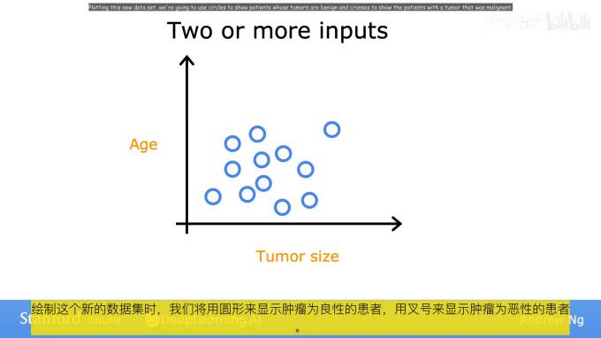
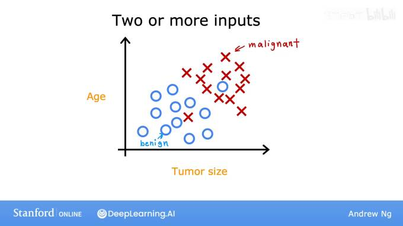
05:25所以，当一位新患者到来时，医生可以测量患者的肿瘤大小，并记录患者的年龄。
05:33那么，据此我们如何预测这位患者的肿瘤是良性还是恶性呢？
05:41对于这样的数据集，学习算法可能会做的是，找到某种能够将恶性肿瘤与良性肿瘤分开的边界。
05:52因此，学习算法必须决定如何为这些数据拟合出一条边界线。
05:58学习算法找到的边界线将有助于医生进行诊断。
06:04在这个例子中，肿瘤更有可能是良性的。
06:08从这个例子中，我们看到了如何使用两个输入：患者的年龄和肿瘤大小。
06:15在其他机器学习问题中，通常需要更多的输入值。
06:21我那些研究乳腺癌检测的朋友使用了更多额外的输入，比如肿瘤块的厚度、细胞大小的均匀性、细胞形状的均匀性等等。
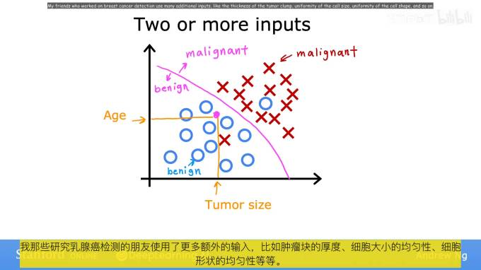
06:33因此，回顾一下，监督学习将输入 X 映射到输出 Y，学习算法从所谓的正确答案中学习。
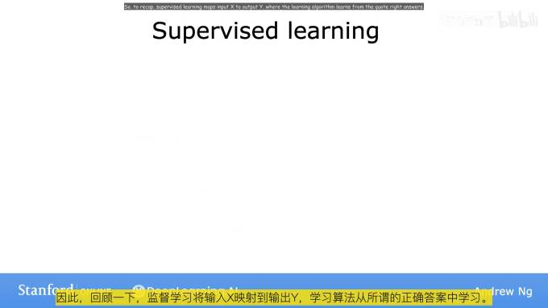
06:44监督学习的两种主要类型是回归和分类。
06:49在回归应用中，比如预测房价，学习算法必须从无限多的可能输出数值中预测出数值。
06:59而在分类中，学习算法必须从一组有限的可能输出中预测一个类别。
07:07所以，你现在知道了什么是监督学习，包括回归和分类。
07:15接下来，还有第二种主要类型的机器学习，称为无监督学习。
07:21让我们继续看下一个视频，了解那是什么。
07:22我进送下一个现机、现元什会，让我们继续看下一个视频，了解那是什么。